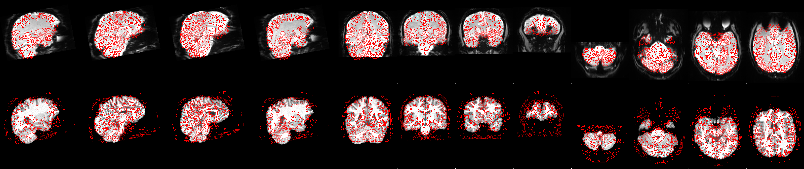
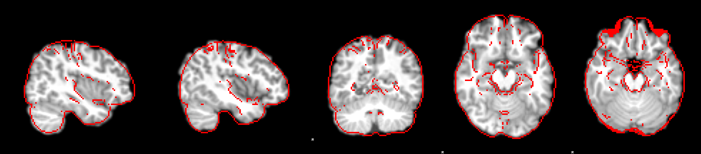
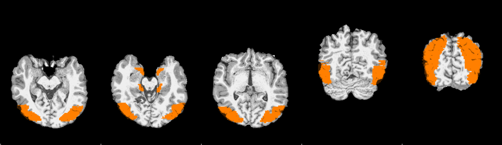
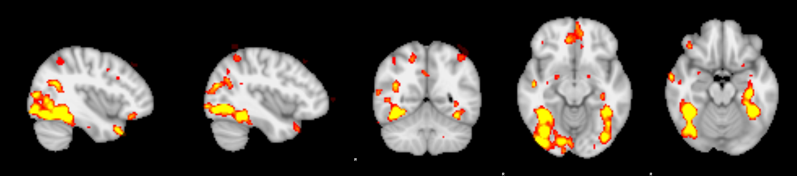
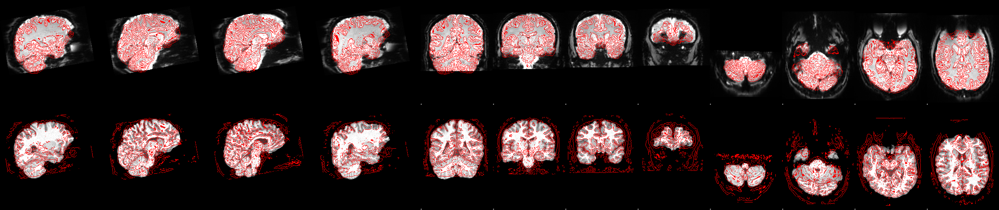
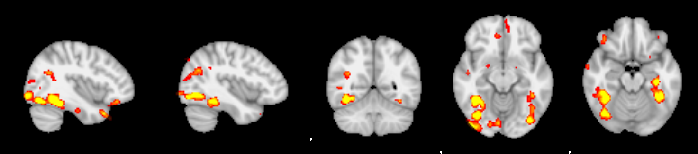

1 functional (grey) with the anatomy's outline (red), from FEAT; for later sessions the anatomy is the first session's. 2 anatomy moved to MNI, red = template outline; slices x = +40 / -40, y = -54, z = -12 / -18 mm. 3 searchmasks (colour) moved from MNI onto the first-session anatomy; axial slices through the masks' centre and 8 mm above / below, then two coronal slices. 4 this session's face-vs-others map (z > 3.1, colour) in MNI, same slices as 2. Click a picture to enlarge.
| 1 functional on anatomy | 2 anatomy → MNI | 3 MNI → subject (searchmasks) | 4 z-map in MNI | |
|---|---|---|---|---|
| sub-079 ses-01 first session: ses-01 |  |  |  |  |
| sub-079 ses-02 first session: ses-01 |  |  |